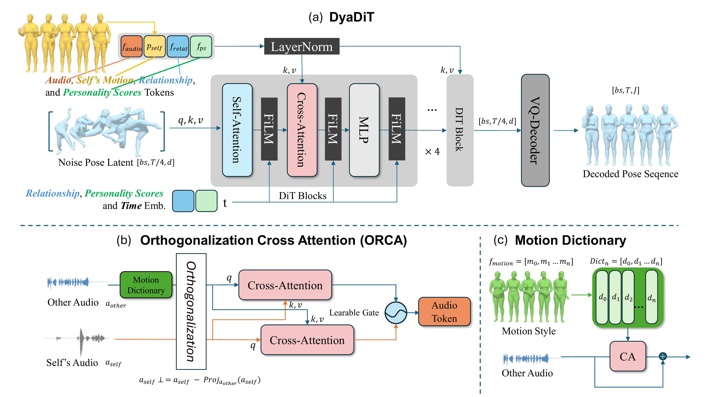
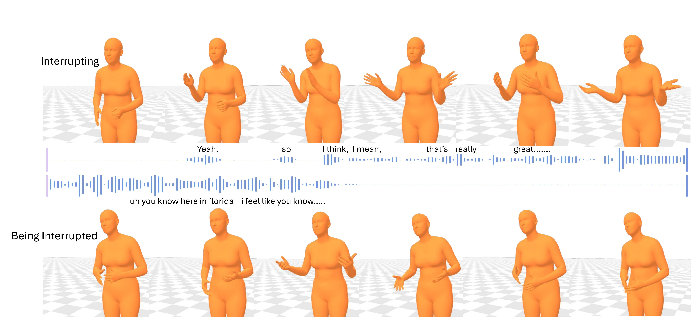
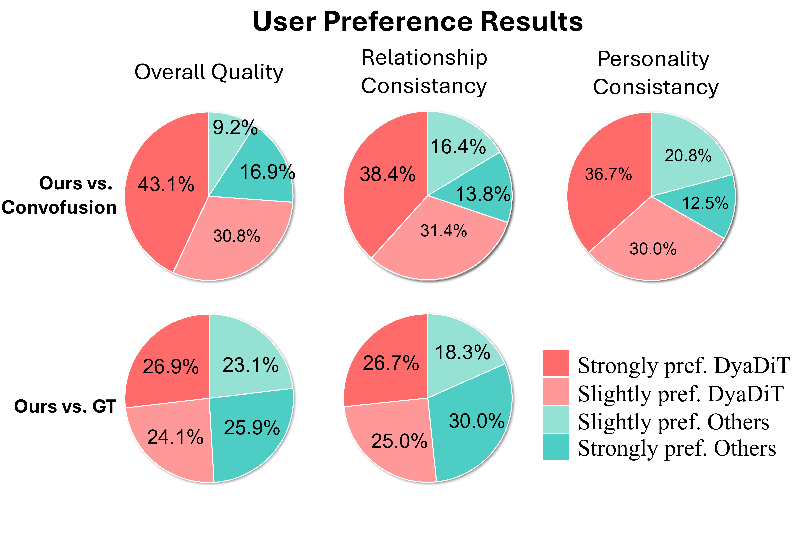

Generating realistic conversational gestures is key to making digital humans feel natural and socially engaging. In this work, we present DyaDiT, a multimodal diffusion transformer that takes dyadic audio signals and, optionally, the partner's gesture as input to generate contextually appropriate and socially favorable gestures. DyaDiT conditions on multiple input modalities—including audio, partner motion, relationship type, and personality scores. It incorporates an Audio Orthogonalization Cross-Attention (ORCA) module to derive cleaner and more disentangled audio features, and leverages a learnable motion dictionary to guide style-aware gesture generation. In particular, ORCA reduces ambiguity between the two audio streams, allowing DyaDiT to generate realistic motion even when one speaker interrupts or overlaps with the other. DyaDiT controls gesture style through relationship and personality-score tokens. We conducted an A/B preference study with sixteen participants to evaluate human motion in dyadic conversation settings. Participants preferred our generated gestures, citing their more natural and socially aware conversational behavior.

Figure 2. Architecture of DyaDiT. (a) The overall pipeline uses DiT blocks with Self-Attention, Cross-Attention, and FiLM layers, conditioned on relationship, personality scores, and time embeddings. (b) The Orthogonalization Cross-Attention (ORCA) module disentangles self and other audio features via orthogonalization and a learnable gate. (c) The Motion Dictionary guides style-aware generation through cross-attention with audio features.

Figure 3. Qualitative results for interruption scenarios. DyaDiT generates distinct gesture behaviors for interrupting (active, expressive gestures) and being interrupted (restrained, listening gestures), demonstrating awareness of conversational dynamics.

Figure 4. A/B user preference study results. DyaDiT is preferred over Convofusion across overall quality, relationship consistency, and personality consistency. Against ground truth (GT), DyaDiT achieves competitive preference rates.
@misc{peng2026dyaditmultimodaldiffusiontransformer,
title={DyaDiT: A Multi-Modal Diffusion Transformer for Socially Favorable Dyadic Gesture Generation},
author={Yichen Peng and Jyun-Ting Song and Siyeol Jung and Ruofan Liu and Haiyang Liu and Xuangeng Chu and Ruicong Liu and Erwin Wu and Hideki Koike and Kris Kitani},
year={2026},
eprint={2602.23165},
archivePrefix={arXiv},
primaryClass={cs.CV},
url={https://arxiv.org/abs/2602.23165},
}